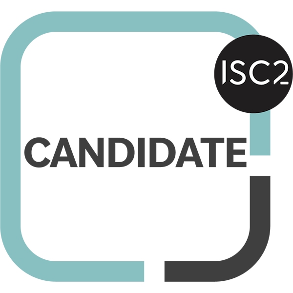

👨 About Me
I’m Mohamed Rimsan, a third-year BSc (Hons) in Information Technology undergraduate with a strong and growing interest in Cybersecurity (SOC operations) and IT operations.I have been building my expertise in defensive security through hands-on labs, threat detection exercises, and incident response simulations, while also strengthening my foundation in systems, networking, and enterprise IT environments.
My learning journey combines practical technical exposure with a problem-solving mindset. I continuously enhance my skills through online courses, workshops, and hands-on projects in areas such as log analysis, digital forensics fundamentals, and security monitoring. In parallel, I actively engage with professional communities and industry resources to stay aligned with evolving cybersecurity and IT best practices.
My prior experience in IT support, customer service, and data management has strengthened my troubleshooting, communication, documentation, and team collaboration skills — qualities essential for both IT operations and security-focused roles in fast-paced environments.
I’m now seeking entry-level or internships opportunities in IT support or Security Operations environments where I can contribute effectively, gain practical industry exposure, and progressively develop into a well-rounded cybersecurity professional.
👨🏻💻 My Educational Journey
My journey began with a natural curiosity about how technology works behind the scenes. What started as an interest in science and computing gradually evolved into a focused passion for Information Technology and, more recently, Cybersecurity.
Currently, I am pursuing a Bachelor of Science (Honours) in Information Technology (BSc Hons IT) at the The Open University of Sri Lanka. Bachelor of Science (Honours) in Information Technology (BSc Hons IT), where I am developing a strong foundation in networking, systems administration, and IT infrastructure, alongside growing expertise in defensive security principles. I have actively explored areas such as SOC operations, incident response, and threat detection through hands-on labs, self-driven projects, and continuous technical learning.
My academic journey goes beyond theoretical understanding—it is centered on applying knowledge in practical scenarios to build real-world problem-solving capabilities. I am committed to strengthening both my IT and cybersecurity competencies to effectively contribute in dynamic, security-conscious technology environments.
🏆 Certification Prestiges
Certified in Cybersecurity (CC)
📑
×

Google Cybersecurity Professional
📑
×

Certified Phishing Prevention Specialist (CPPS)
📑
×

Junior Cybersecurity Analyst
📑
×

🎖️ Earned Badges

.png)